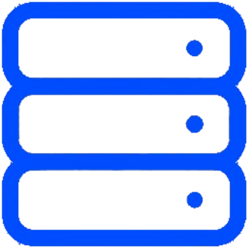
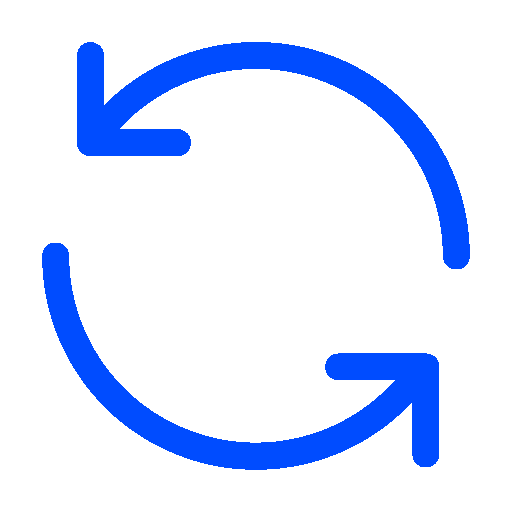
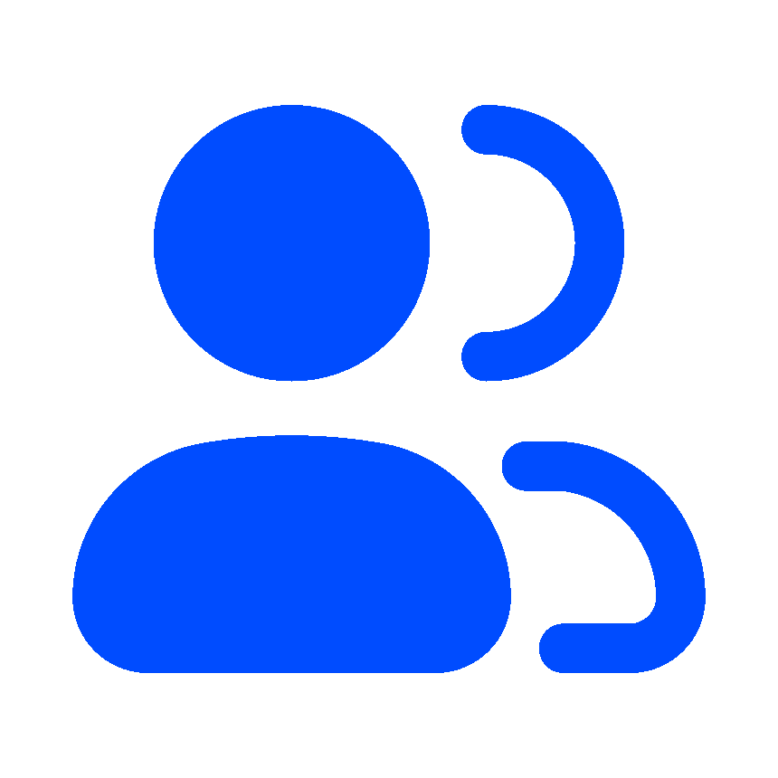

1. Planejamento Ágil (Scrum)
O Scrum é um framework ágil para gerenciar projetos complexos, focando em entregas incrementais e colaboração contínua. Ele se baseia em ciclos curtos (Sprints) que permitem adaptação rápida às mudanças e maior transparência para todos.

Product Backlog
A lista priorizada de funcionalidades e requisitos do produto.

Sprint
Iterações de tempo fixo (geralmente 2-4 semanas).

Daily Scrum
Reunião diária de 15 min para sincronizar o time.